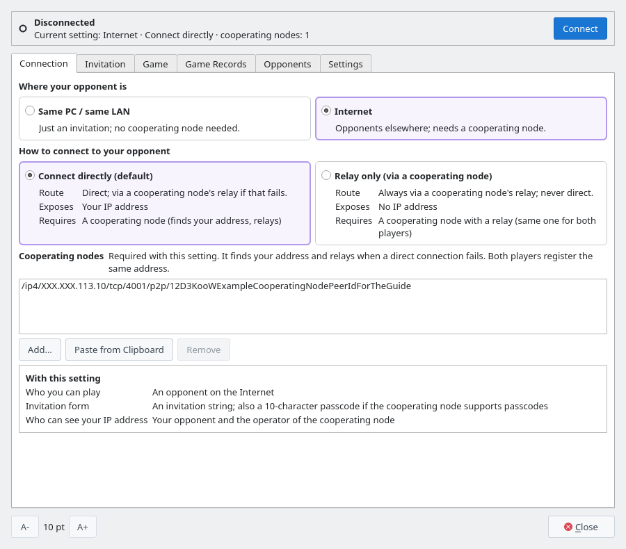
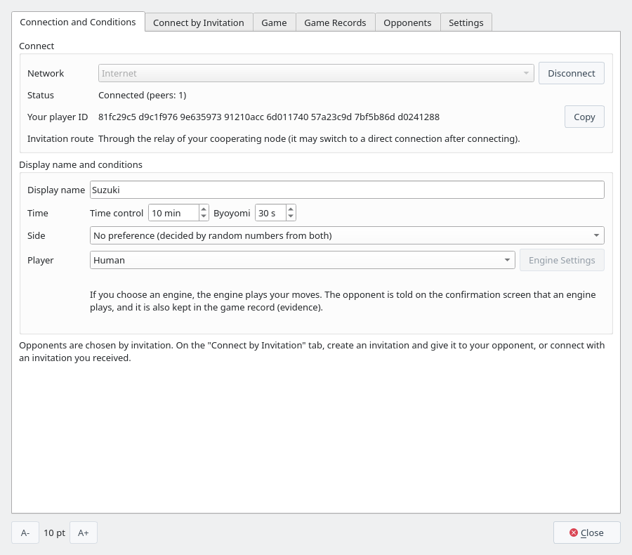
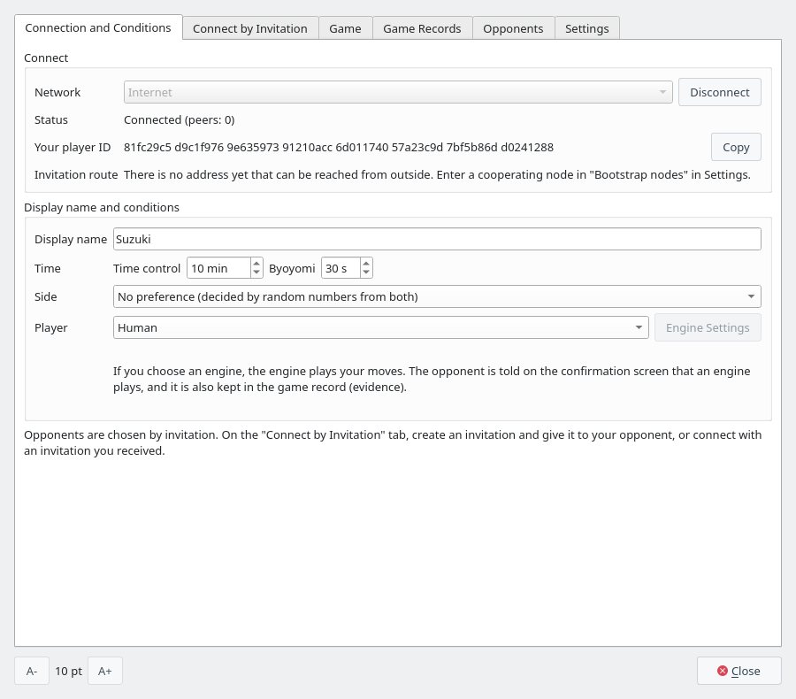
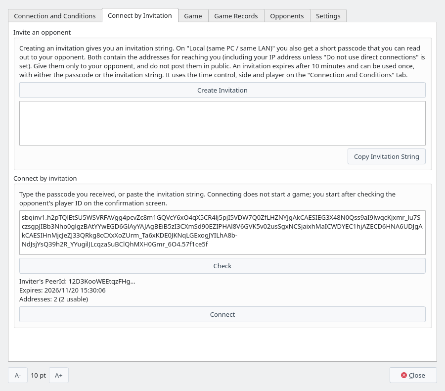
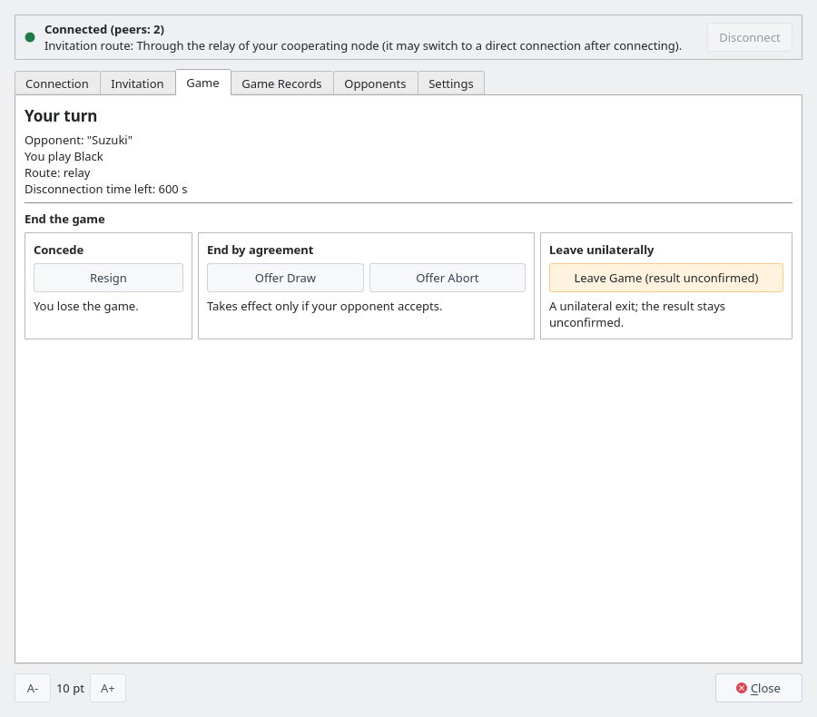
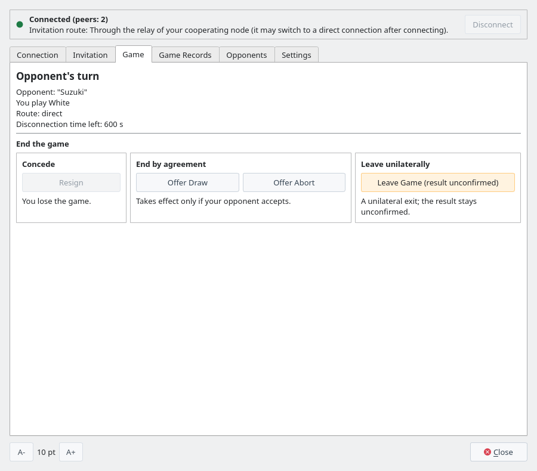
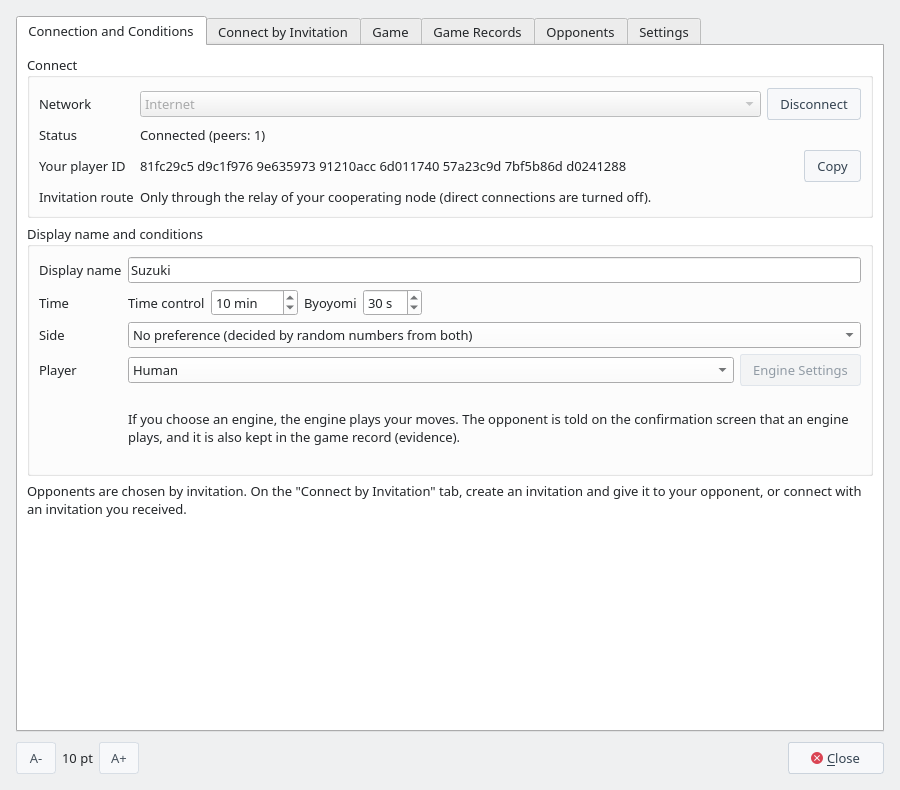
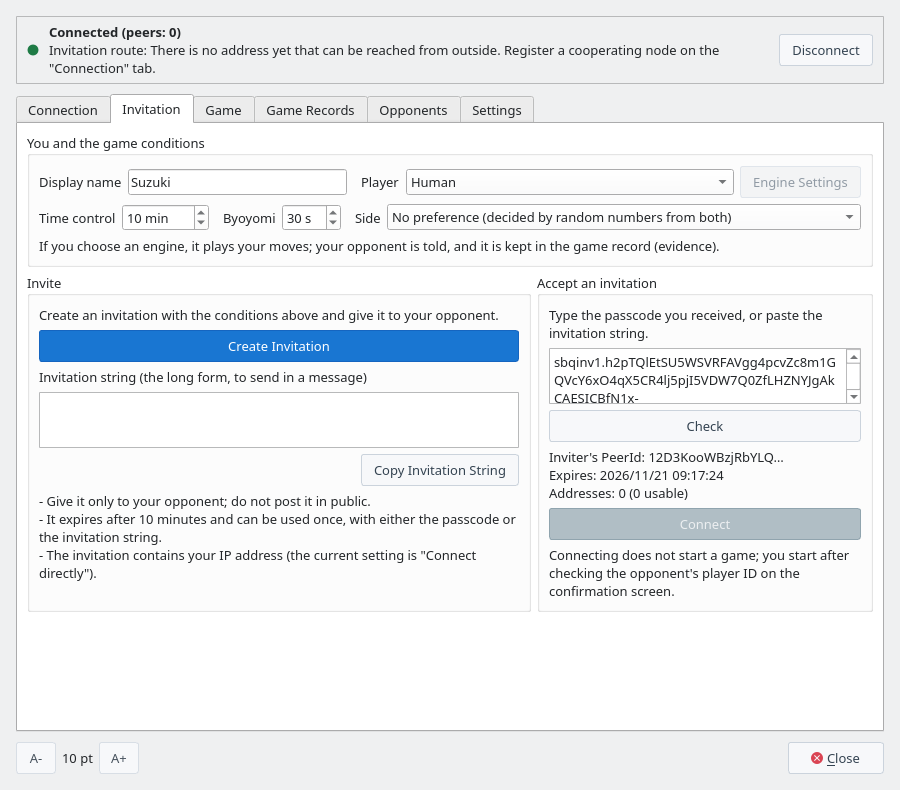
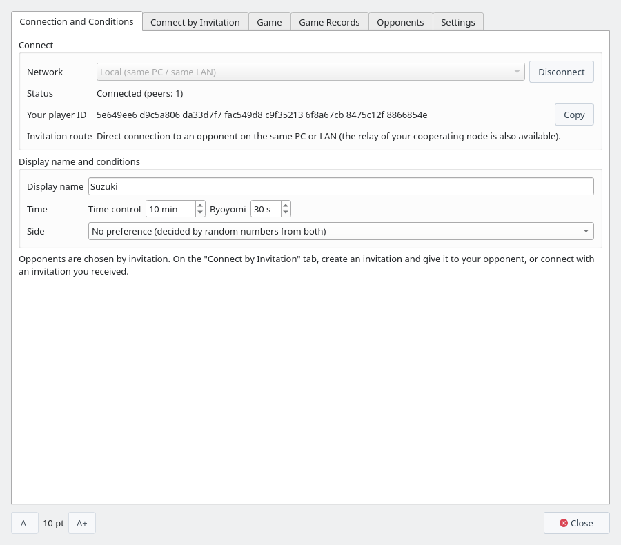

Playing with a Cooperating Node
Play a P2P game by invitation with an opponent on the Internet, through a cooperating node
Setting up P2P games (player key and display name), the window, and game records are covered in P2P Games. To play someone on the same PC or LAN, see Playing Without a Cooperating Node. To try a cooperating node inside your own LAN, see Trying It on a LAN.
What Is a Cooperating Node?
A server that both players' apps connect to first in a game over the Internet
To play over the Internet, the invitation must contain an address that the opponent's app can use to reach your PC. However, most PCs on home or mobile connections are behind a router, and the PC itself does not know which address it has as seen from the Internet. Connections from outside may also be stopped by the router. P2P games have no server that finds opponents or tells players each other's addresses.
So your app first connects to a cooperating node, which runs at a place reachable from the Internet, and the node takes care of two things.
- Reachability check: It tells you your PC's address as seen from the Internet and whether that address can be reached from outside. If it can, the address goes into the invitation and you connect directly with your opponent.
- Relay: Your app reserves a relay slot on the cooperating node and also puts an address that goes through the node into the invitation. When your PC cannot be reached directly from outside (as with most home connections), the opponent connects through the cooperating node with this address.
If you connect to Internet without a cooperating node, the invitation contains no address at all, and your opponent cannot connect.
- Does: The reachability check and the relay. A cooperating node started with
--meetalso provides the rendezvous for passcodes (keeping an encrypted invitation for up to 10 minutes). - Does not: It does not judge moves or results, and does not store game records. Relayed traffic is encrypted between the two apps, so the node cannot read its contents (moves, player IDs, display names) either. An invitation kept for the passcode rendezvous is encrypted with a key made from the passcode, so the node cannot read that either.
- Not a game server: Even through a relay, the other side of your game is your opponent's app; the cooperating node does not play the role of the server in CSA network play. For a comparison table, see A Relay Does Not Make the Cooperating Node a Game Server.
- What the operator can see: The IP addresses of the users and which IP addresses connected to each other. The cooperating node program does not write source IP addresses to its log, but the operator can find them by examining the traffic. The reachability check only asks the node to test, one at a time, the addresses it saw; the users' LAN addresses are not sent. For users of the friends list, the operator can also tell who is friends with whom (the pairs of IP addresses that deposited and collected the same number).
- Stopping or delaying traffic: The cooperating node can stop or delay the traffic it relays, but cannot alter it (altered traffic fails the encryption check, and the apps reject it). If the traffic stops, it is handled the same way as a dropped connection (When the Connection Drops).
Who Runs the Cooperating Node?
One cooperating node is enough. Someone who can provide a server reachable from the Internet runs it and gives its address to the players
- One is enough: The two players need only one cooperating node between them. They do not each have to run one.
- Both enter the same address: The person who runs it shares the address, and both players enter it in Bootstrap nodes on the Settings tab. If the inviter has not entered it, the invitation contains no address. A player who turns on Do not use direct connections must have the same cooperating node as the opponent.
- Shared by many pairs: One cooperating node can be used by many pairs of players (relay slots for up to 128 people at a time).
- Not built into the app: The app does not come with any cooperating node addresses, so the players arrange one themselves.
The cooperating node is run by someone who can provide a server reachable from the Internet. It can be one of the two players or someone they both know.
| Who runs it | Suitable when |
|---|---|
| One of the two players | They have a server such as a VPS, or can open a port on their home router |
| Someone they know (who does not play) | In a study group or club, one person runs a cooperating node and all members use its address |
The person who runs it needs the following.
- An IP address reachable from the Internet: A server with a global IP address (such as a VPS), or a home connection where you can open a port. Mobile connections and connections where the provider stacks address translation (CGNAT) cannot be reached from outside, so they cannot run one.
- Linux or macOS: The cooperating node program restricts its own privileges before it runs (with Landlock and seccomp on Linux, with the sandbox on macOS). It does not run where the restrictions cannot be applied, and it cannot be run on Windows. The steps on this page use a Linux server as the example.
- One TCP port you can open: Port 4001 in the examples on this page.
- Keep it running: Do not stop it while the two players are playing. A game played over the relay is cut off when the cooperating node stops, and is aborted (result unconfirmed) if it cannot reconnect within 120 seconds.
The operator can see the users' IP addresses. Let the users know this.
Before you set up a server, you can also try running a cooperating node and its relay inside your own LAN (Trying It on a LAN).
Run a Cooperating Node
Run the P2P communication process shogiboardq-peer as a cooperating node
A cooperating node is the P2P communication process shogiboardq-peer started with --service. When you build the app with P2P games enabled, it is created in the same folder as the app (installing puts it in bin).
The server needs neither Qt nor a display. With Rust (1.85 or later) and a C compiler, you can build only the communication process.
$ git clone https://github.com/hnakada123/ShogiBoardQ.git
$ cd ShogiBoardQ
$ cargo build --release --locked -p shogiboardq-peer
$ sudo install -m 755 target/release/shogiboardq-peer /usr/local/bin/$ shogiboardq-peer --service --relay --meet --network sbq-limited-1 \
--identity ~/coop-node.key --listen /ip4/0.0.0.0/tcp/4001
shogiboardq-peer: service started as 12D3KooW…| Option | Meaning |
|---|---|
--service | Runs as a cooperating node. |
--relay | Provides the relay. Games between home connections almost always need it. |
--meet | Provides the rendezvous for passcodes. With it, an invitation on Internet also gets a 10-character passcode that can be told by voice. The cooperating node only keeps the encrypted invitation for up to 10 minutes and cannot read it. It is also used for the friends list (online notices). |
--network sbq-limited-1 | The network for games over the Internet. The app's Internet network joins the network with this name. A cooperating node for the app's Local network is started with sbq-local-1 (Trying It on a LAN). |
--identity <file> | The file with the cooperating node's identity key. It is created if missing (readable and writable only by its owner). As long as you keep using the same file, the PeerId does not change. If you delete it, the PeerId changes and you have to share the address again. |
--listen <address> | The address and port to listen on. 0.0.0.0 listens on all network interfaces. The port does not have to be 4001. |
When it starts, the PeerId is shown after service started as. Press Ctrl+C to stop it. After that, it prints the number of connected apps (peers=) and, when started with --relay, the number of connections it is relaying (relays=) whenever they change, for example shogiboardq-peer: peers=2 relays=1. When started with --meet, it also appends the number of invitations it is keeping (meets=); the examples on this page leave it out. relays is not the number of players; it is 1 for each pair of players connected through the relay. It does not print the IP addresses that connected.
A cooperating node does not expire (the expiry applies only when the app joins the Internet network).
In the server's firewall, allow connections to the port given in --listen (TCP port 4001). On a VPS, also allow it in the provider's packet filter (such as a security group) in its control panel.
# firewalld
$ sudo firewall-cmd --permanent --add-port=4001/tcp
$ sudo firewall-cmd --reload
# ufw
$ sudo ufw allow 4001/tcpTo run it on a PC at home, forward the port on your router to that PC (port forwarding). If your home's global IP address changes, the cooperating node's address changes too. Also, to use this cooperating node from a PC inside the same home, the router must support connections looped back to its own global IP address (hairpin NAT), because the Internet network does not connect to cooperating nodes at LAN addresses.
A cooperating node's address has the following form. The PeerId is the string shown after service started as when it started.
/ip4/<server's global IP address>/tcp/4001/p2p/<PeerId>Write it with an IP address (domain names cannot be used). Give this address to the players.
The Internet network uses only addresses on the Internet (global IP addresses). If you enter a LAN address such as 192.168.…, 10.… or 172.16.…–172.31.…, or 127.0.0.1, that line is not used, and the app shows no message about it. To try a cooperating node at a LAN address, see Trying It on a LAN.
You can check that it works in the app. Enter it in Bootstrap nodes and connect to Internet. If the peer count becomes 1 or more and Invitation route shows "Through the relay of your cooperating node (…)." or "Direct connection (the relay of your cooperating node is also available).", the cooperating node and its relay are working.
To keep it running on a server, make it a systemd service so that it also starts automatically when the server restarts. Create /etc/systemd/system/sbq-coop-node.service with the following contents (the identity key is kept in /var/lib/sbq-coop-node).
[Unit]
Description=ShogiBoardQ P2P cooperating node
After=network-online.target
Wants=network-online.target
[Service]
DynamicUser=yes
StateDirectory=sbq-coop-node
ExecStart=/usr/local/bin/shogiboardq-peer --service --relay --meet --network sbq-limited-1 \
--identity /var/lib/sbq-coop-node/coop-node.key --listen /ip4/0.0.0.0/tcp/4001
Restart=on-failure
[Install]
WantedBy=multi-user.target$ sudo systemctl enable --now sbq-coop-node
$ journalctl -u sbq-coop-node # check the PeerIdPreparing the Two Players
Both players enter the same cooperating node and connect to Internet
The first time, create a player key and enter a display name (Setup).
In Bootstrap nodes on the Settings tab, enter the cooperating node addresses you were given, one per line (up to 16). If you enter several, you can still use the others when one of them is down. Bootstrap nodes take effect the next time you connect (if you change them while connected, disconnect and connect again).


Settings tab: a cooperating node in Bootstrap nodes (part of the address is masked)
On the Connection and Conditions tab, set Network to Internet and click Connect. Once your app connects to the cooperating node and reserves a relay slot, Invitation route shows "Through the relay of your cooperating node (it may switch to a direct connection after connecting)." The reservation may take a little while.


Connected to a cooperating node
If you connect without a cooperating node, your app connects to no one ("Connected (peers: 0)"), and Invitation route shows "There is no address yet that can be reached from outside. …". An invitation created in this state contains no address, and "This invitation contains no address, so your opponent cannot connect. …" appears below Create Invitation. The same happens when Bootstrap nodes contains only LAN addresses (Trying It on a LAN).


Connected without a cooperating node
Invite and Play
Exchanging invitations works the same as in games without a cooperating node
When the inviter clicks Create Invitation on the Connect by Invitation tab, an invitation string is created. If the cooperating node was started with --meet, a 10-character passcode (in the form J6HB7-H6NWR) also appears in large type. Tell the passcode by voice or over the phone, or send the invitation string by a channel that reaches only the opponent, such as a message. The opponent types the passcode or pastes the invitation string and clicks Check. If "Addresses: N (N usable)" shows at least one usable address, Connect connects to the inviter. If no address is usable, Connect cannot be clicked (If You Cannot Connect). The confirmation screen and the game that follow are the same as in games without a cooperating node.
This passcode contains no address. The invitation is kept encrypted at the cooperating node for up to 10 minutes, and the opponent's app collects it with the passcode (the cooperating node cannot read it). Its form differs from the passcode on Local for the same LAN (about 12 characters), and the app tells them apart. The passcode and the invitation string are one and the same invitation, so only one of them can be used, once.
The invitation contains addresses that go through the cooperating node (and, if the inviter's PC can be reached directly from outside, that PC's IP address too). Do not post it in public.
In "Addresses: N (N usable)", the first number is how many addresses the invitation contains (up to 8), and the usable number is how many of them your app can connect to with its current settings. Both numbers depend on how many addresses the inviter's PC and the cooperating node have.
An invitation lets one person connect once and stops working after 10 minutes. Up to four can be valid at the same time, and you can play one game at a time (see How Many People You Can Invite, and How Often).


The invited player: checking a received passcode
The opponent first connects through the relay of the cooperating node. Right after that, both apps try to get through their routers and connect directly (hole punching). If they connect directly within 3 seconds, the apps close the relayed connection and carry out the confirmation and the game over the direct connection (Route on the Game tab shows "direct"). If not, they continue over the relayed connection (Route shows "relay"). While the apps check whether they can connect directly, the invited player's screen keeps showing "Connecting…".
Even when Route becomes "direct", you need a cooperating node. A PC that can be reached directly from outside uses it to confirm the address that goes into the invitation; other PCs use it to relay the first connection and to arrange the direct connection. This holds even when Do not use direct connections is off. While Route is "direct", moves do not pass through the cooperating node.
Behind a router that changes the source port for every connection, or on a line with several layers of address translation such as a mobile connection, a direct connection is not possible and the game stays on "relay". You can still play over the relay, but moves travel through the cooperating node and may arrive a little later. ShogiBoardQ's cooperating node closes each relayed connection after 30 minutes, so a long game may include an automatic reconnection (Reconnecting) along the way. At each reconnection, the apps try again to connect directly.


Route: relay — the routers did not let a direct connection through


Route: direct — connected directly through the routers after connecting through the relay
The images on this page were taken by recreating a cooperating node and home routers (NAT) on a virtual network inside Docker and playing a real game between two apps. For the "relay" image, the routers were set to change the source port for every connection.
Play Without Showing Your IP Address
With Do not use direct connections, your opponent sees only the cooperating node's address
Normally, your opponent's app and your PC connect directly (the relay of a cooperating node is used only when they cannot). With a direct connection, your opponent can learn your IP address on the Internet by examining the traffic (the app does not show it). An IP address may reveal your rough location and your Internet provider. Your IP address is also put into your invitations.
When you check Do not use direct connections on the Settings tab, your app always connects to the opponent through the relay of a cooperating node, and puts only addresses that go through the cooperating node into invitations. Your opponent sees only the cooperating node's address, and your IP address is visible only to the operators of the cooperating nodes you entered in Bootstrap nodes. Use it when you play with someone on the Internet whom you do not know well.
The setting changes the following.
| What changes | Unchecked | Checked |
|---|---|---|
| Addresses in your invitations | Addresses that go through the cooperating node (and your PC's IP address, if it can be reached directly from outside) | Only addresses that go through the cooperating node |
| Connecting directly to the opponent | Attempted | Not attempted |
| Route during the game | "direct" (or "relay" if the apps cannot connect directly) | Always "relay" |
| Your IP address | Your opponent can find it out | Hidden from your opponent (visible to the operator of the cooperating node) |
Either way, you need a cooperating node. What this setting changes is not whether a cooperating node is used, but whether the apps connect directly to each other.
- A cooperating node is required: Enter a cooperating node that provides a relay in Bootstrap nodes. Otherwise Invitation route shows "No relay is available. …", and your opponent cannot connect even if you invite them.
- The same cooperating node as your opponent: With this setting, when you connect with an invitation you received, your app uses only addresses that go through the cooperating nodes you entered. The opponent who invited you must also have the same cooperating node in Bootstrap nodes (otherwise you see "This invitation has no address that goes through the relay of your cooperating nodes. …").
- Always relayed: Since no direct connection is attempted, Route stays "relay" for the whole game. Moves travel through the cooperating node, so they may arrive a little later than over a direct connection, and a long game may include an automatic reconnection (Reconnecting) along the way.
This setting takes effect the next time you connect. Once connected, Invitation route shows "Only through the relay of your cooperating node (direct connections are turned off)."


Connected with Do not use direct connections
Trying It on a LAN
Before you set up a server, you can check running a cooperating node and its relay inside your own LAN
On the Internet network, the app connects only to addresses on the Internet. If you run a cooperating node on your own PC or on another PC on the same LAN and enter its LAN address (such as /ip4/192.168.10.16/tcp/4001/p2p/…) in Bootstrap nodes, that line is not used, and the result is the same as having no cooperating node.
- The inviter: Status stays at "Connected (peers: 0)", and Invitation route shows "There is no address yet that can be reached from outside. …". Creating an invitation shows "This invitation contains no address, so your opponent cannot connect. …".
- The invited player: Pasting the invitation string and clicking Check shows "Addresses: 0 (0 usable)", and Connect cannot be clicked.


The invited player: after checking an invitation that contains no address (Connect cannot be clicked)
If you only want to play someone on the same LAN, you do not need a cooperating node (Playing Without a Cooperating Node). To try starting a cooperating node, entering it in Bootstrap nodes, and playing through its relay inside a LAN, use the steps below.
Start the cooperating node with --network sbq-local-1. The other options are the same.
$ shogiboardq-peer --service --relay --meet --network sbq-local-1 \
--identity ~/coop-node.key --listen /ip4/0.0.0.0/tcp/4001Write the address for Bootstrap nodes with the LAN IP address of the PC that runs the cooperating node (an app running on that same PC can use this address too). With the same identity key file, the PeerId is the same as when the node was started with sbq-limited-1.
/ip4/<LAN IP address of the cooperating node's PC>/tcp/4001/p2p/<PeerId>Both players enter this address in Bootstrap nodes on the Settings tab, set Network to Local (same PC / same LAN) on the Connection and Conditions tab, and click Connect. If the peer count becomes 1 and Invitation route shows "Direct connection to an opponent on the same PC or LAN (the relay of your cooperating node is also available).", your app has connected to the cooperating node and reserved a relay slot.


Connected to a cooperating node on the LAN with the Local network
Match the cooperating node's --network to Network in the app.
| Network in the app | --network of the cooperating node | Addresses you can enter in Bootstrap nodes |
|---|---|---|
| Internet | sbq-limited-1 | Addresses on the Internet (global IP addresses) |
| Local (same PC / same LAN) | sbq-local-1 | LAN addresses (such as 192.168.…) |
If they do not match, the relay cannot be used. When the app connects on Local to a cooperating node still running with sbq-limited-1, the peer count becomes 1, but no relay slot is reserved, and Invitation route stays at "Direct connection to an opponent on the same PC or LAN."
On the firewall of the PC that runs the cooperating node, allow connections to the port given to --listen (TCP 4001) (Open the Port). For the ports on the players' PCs, see Play Another PC on the Same LAN.
If you invite your opponent as it is, the invitation contains LAN addresses and the two apps connect directly (Route on the Game tab shows "direct"). The relay of the cooperating node is not used. This is the same as having no cooperating node; what you have checked so far is only that your app connects to the cooperating node and reserves a relay slot.
To try a game through the relay, either player (or both) checks Do not use direct connections on the Settings tab, disconnects, and connects again. If neither checks it, Route is "direct"; if at least one does, it is "relay".
- Invitation route of the player who checked it shows "Only through the relay of your cooperating node (direct connections are turned off)."
- An invitation created by the player who checked it contains only addresses that go through the cooperating node.
- When the player who checked it checks an invitation they received, only the addresses that go through the cooperating node are usable (if the inviter has not checked it, the usable count in "Addresses: N (M usable)" is smaller than the address count).
- After connecting with Connect and starting the game, Route on the Game tab shows "relay" for both players.
The address counts differ from PC to PC. On the Local network, an invitation contains, in this order and up to 8 in total: the LAN addresses of the inviter's PC (one each for UDP and TCP per network interface, including virtual interfaces such as Docker's), addresses that go through the cooperating node (one per address of the cooperating node's PC when it listens on 0.0.0.0), and addresses that work only inside the same PC. A player who checked Do not use direct connections can use only the addresses that go through the cooperating node.
What you can check on a LAN is starting the cooperating node, entering it in Bootstrap nodes, and inviting and playing through the relay. The reachability check, connecting directly through routers (hole punching), and the expiry belong only to the Internet network, so they cannot be tried on a LAN. To use the cooperating node for games over the Internet, start it again with --network sbq-limited-1 and set Network in the app back to Internet.
If You Cannot Connect, and Expiry
The message on the screen tells you what to check
| Message or state | What to check |
|---|---|
| The peer count stays at 0 ("Connected (peers: 0)") | The address in Bootstrap nodes is wrong, the cooperating node is down, or the server's firewall is closed. Write the address with an IP address (domain names cannot be used). On the Internet network, a line with a LAN address (such as 192.168.…) is not used (Trying It on a LAN). |
| Invitation route shows "There is no address yet that can be reached from outside. …" | Your app has not connected to the cooperating node yet, or has not reserved a relay slot yet. If it does not change after a while, check the row above. |
| Check shows "Addresses: 0 (0 usable)" for an invitation string, and Connect cannot be clicked | The invitation contains no address. The inviter created it before their app connected to the cooperating node or reserved a relay slot. Ask the inviter to check that Invitation route no longer shows the message in the row above, and to create a new invitation after it changes to "Through the relay of your cooperating node (…)." or a similar message. |
| Invitation route shows "No relay is available. …" | Do not use direct connections is on, and Bootstrap nodes has no cooperating node that provides a relay. Also check that the cooperating node was started with --relay. |
| No passcode appears when you create an invitation on Internet | The cooperating node was not started with --meet, or you are not connected to it yet. The invitation string works even without a passcode. |
| "The invitation for this passcode is received from a cooperating node. …" | The app of the player who typed the passcode is not connected to a cooperating node that supports passcodes. Enter the same cooperating node as the inviter in Bootstrap nodes and connect again. |
| "No invitation was found for this passcode. …" | The passcode is wrong, its 10 minutes have passed, or it has already been used. Ask the inviter to create a new invitation. |
| "This invitation has no address that goes through the relay of your cooperating nodes. …" | Do not use direct connections is on, and your cooperating node differs from the inviter's. Enter the same cooperating node. |
| "The invitation is for another network." | The two players chose different networks. Both connect to Internet (or both to Local when trying it on a LAN). |
| On Local, Invitation route does not show "(the relay of your cooperating node is also available)" | Check that the cooperating node was started with --network sbq-local-1 and --relay, and that the address in Bootstrap nodes is a LAN address (Trying It on a LAN). |
| "This build has expired and cannot join the "Internet" network. …" | The build has passed its expiry (step 2 below). |
A build can join the Internet network for 180 days from the day the app was built (shown as This build expires on the Settings tab). P2P games have no server that can stop old versions, so this keeps old versions with unfixed bugs or security flaws from staying on the network. After it expires, update to a newer version (or rebuild, if you build from source).
Only the app's Internet network expires. The cooperating node, Local games, and reviewing and verifying saved records have no expiry.
Questions and Answers
Questions that come up when you use a cooperating node, and their answers
Yes. If the cooperating node was started with --meet, Create Invitation shows a 10-character passcode together with the invitation string (Invite and Play). The cooperating node only keeps the encrypted invitation for up to 10 minutes and cannot read its contents (the addresses). The key is made from the passcode by a deliberately slow computation, so working out the passcode from what the node keeps is not practical either. With a cooperating node started without --meet, no passcode appears and there is only the invitation string.
This happens when the invitation contains no address (the invited player sees "Addresses: 0 (0 usable)"). On the Internet network, a cooperating node at a LAN address (such as 192.168.…) is not used, so no address goes into the invitation. To try a cooperating node inside a LAN, start it with --network sbq-local-1 and set Network in the app to Local (Trying It on a LAN). For other causes, see If You Cannot Connect.
sbq-limited-1 and sbq-local-1 in --network?
They are the names that correspond to Network in the app: Internet is sbq-limited-1, and Local (same PC / same LAN) is sbq-local-1. Start the cooperating node with the one that matches Network in the apps that use it. If they do not match, the relay cannot be used even though the app connects (see the table in Trying It on a LAN).
The first number is how many addresses the invitation contains (up to 8), and the usable number is how many of them your app can connect to with its current settings. They depend on how many network interfaces the inviter's PC has and how many addresses the cooperating node has, so they differ from PC to PC. A player who checked Do not use direct connections can use only the addresses that go through the cooperating node, so the usable number is smaller (step 3 of Trying It on a LAN).
On the Internet network, yes. Without a cooperating node, there is no address to put into the invitation. PCs on home connections first connect through the relay of the cooperating node and, if they can connect directly, play over the direct connection (Route: Relay and Direct). On the Local network, the apps connect directly in the same way without a cooperating node, so it is not needed (Playing Without a Cooperating Node).
If you want to try a game through the relay, either player checks it. Without it, the apps connect directly and the cooperating node is not used for the game. If you only want to check that your app connects to the cooperating node and reserves a relay slot, you do not need to check it (step 3 of Trying It on a LAN).
Yes. The cooperating node prints the number of connected apps (peers=) and the number of connections it is relaying (relays=) whenever they change, for example shogiboardq-peer: peers=2 relays=1. While game data goes through the cooperating node, relays is 1 or more. It does not print how much it relayed or the IP addresses that connected. A game connected directly and a game going through the relay differ as follows.
| Compared | A game connected directly | A game going through the relay |
|---|---|---|
| When it happens | The apps could connect directly (a game on the Local network, or a game over the Internet where they got through the routers) | The apps could not connect directly, or either player checked Do not use direct connections |
| Path of the moves | Your app ⇄ your opponent's app | Your app → cooperating node → your opponent's app |
| Traffic at the cooperating node | Only what keeps the connections alive; it does not grow when you move | With every move, it sends to one player about as much as it received from the other |
| Output of the cooperating node | peers=2 relays=0 | peers=2 relays=1 |
| Stopping the cooperating node during a game | The game connection is not cut | The game connection is cut (the game is aborted if it cannot reconnect within 120 seconds) |
Route on the Game tab of the app and relays in the output of the cooperating node show which way you are playing. On the PC that runs the cooperating node (Linux), the following command shows the traffic of each connection of the cooperating node (bytes_received is what it received, bytes_sent is what it sent). 4001 is the port given to --listen.
$ ss -tin 'sport = :4001'Through the relay, every move increases bytes_received of one connection and bytes_sent of the other by about the same amount. With a direct connection, they do not grow when you move. In a test that sent about 31 KB from one app to the other, the cooperating node received 124 bytes with a direct connection and about 35 KB through the relay (about a tenth more than what was sent, for encryption and the relay framing).
Even while relaying, the cooperating node cannot read the content (moves, player IDs, display names) (What a Cooperating Node Does and Does Not Do).
relays=1. Shouldn't it be relays=2?
relays=1 is correct. relays is not the number of players; it is the number of connections the cooperating node is relaying. In a game between two players, the invited player's app makes a single connection to the opponent through the cooperating node, and moves flow over it in both directions. The number of players appears in peers (the number of apps connected to the cooperating node).
| Situation | Output of the cooperating node |
|---|---|
| Two players are connected to the cooperating node, and no game is being played | peers=2 relays=0 |
| Two players are playing one game through the relay | peers=2 relays=1 |
| Four players are playing two games through the relay | peers=4 relays=2 |
It is closed. When you quit ShogiBoardQ, the communication process for P2P games (shogiboardq-peer) ends with it, and all connections to the cooperating node and to your opponent are closed. In the output of the cooperating node, peers goes down by that much. Even if the app ends abnormally, the communication process does not stay behind and keep communicating.
- If you quit during a game: The game is aborted (result unconfirmed). If you quit while the conditions are being confirmed, the negotiation is cancelled.
- If you only close the P2P Game window: The connection and the game continue. To disconnect, click Disconnect on the Connection and Conditions tab or quit ShogiBoardQ (The Tabs of the Window).
- The cooperating node: A cooperating node started in a terminal (
shogiboardq-peer --service …) is a separate process, so it keeps running after you quit ShogiBoardQ. Press Ctrl+C to stop it.